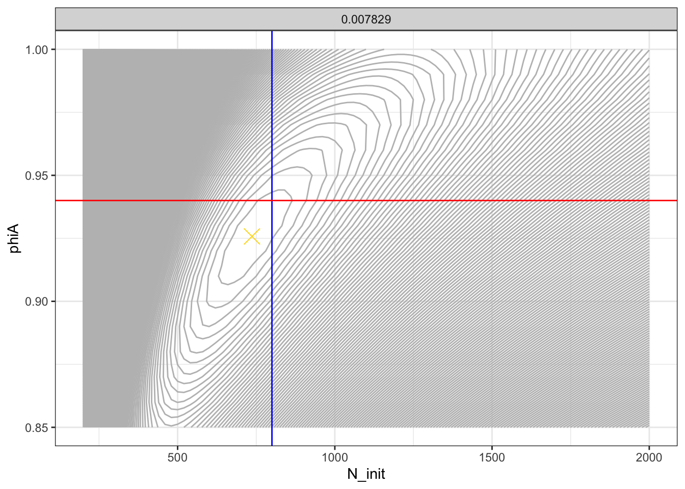
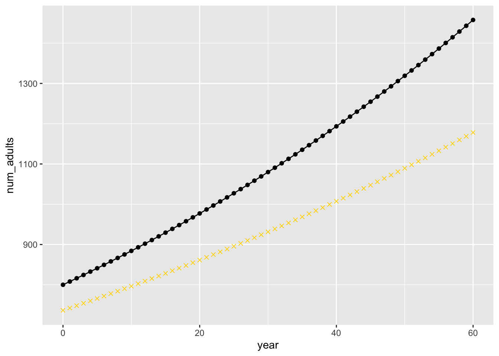
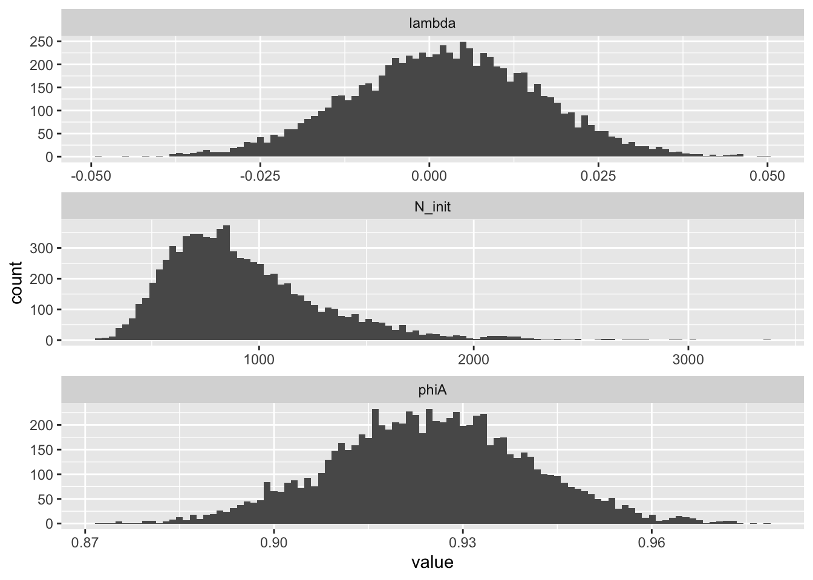
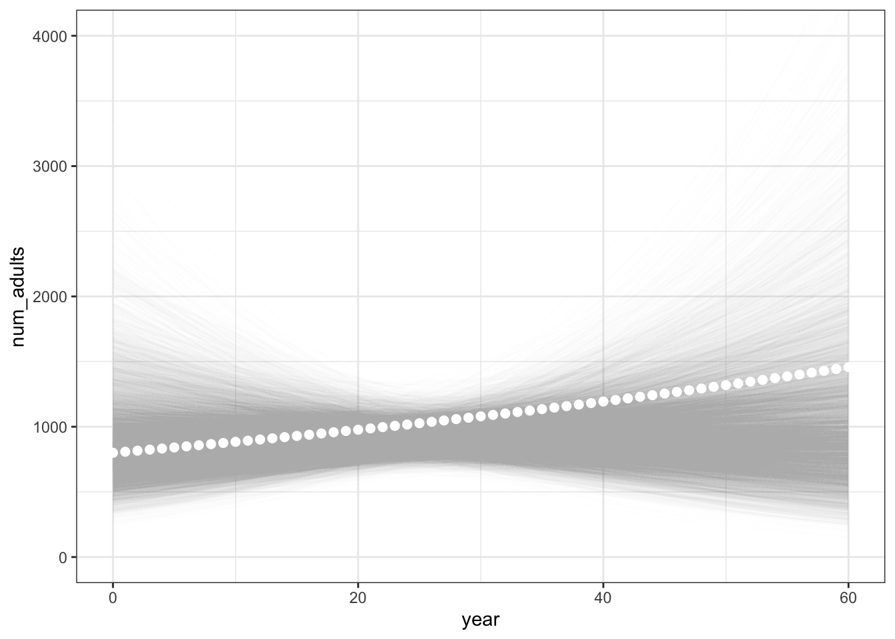
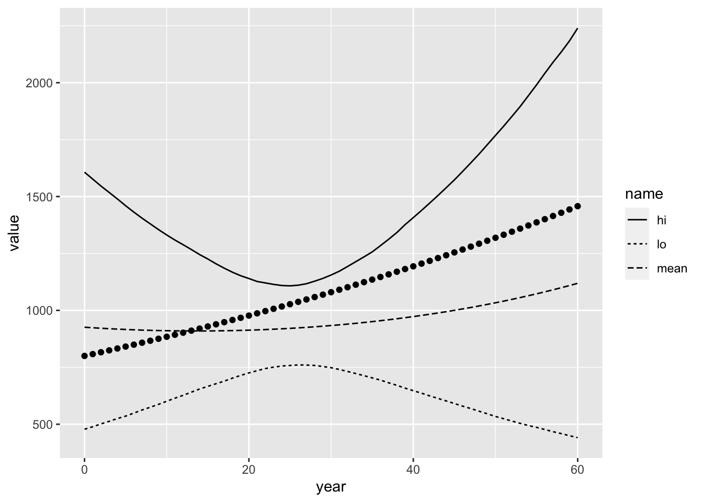

Session 3 Simulation and Inference Play with Hillary et al.’s White Shark CKMR example
Here we explore the models used in Hillary et al. (2018) to estimate abundance of white sharks in Australia. Looking through the paper, I didn’t find any direct mention of a public repository of data that was used in the paper, nor any repository of code for their analyses. So, we are just going to simulate some data here to play with.
While it would be customary to simulate data from a full, age-structured demographic model, we are, instead, going to simulate kin-pair data from the model that they use for inference. One nice thing about simulating from their inference model is that doing so offers a good way to gain a better understanding of that inference model.
In a later session we will confront data simulated from a forward-in-time, age-structured population simulation.
The main goal of this session is to explore the properties of a simple inference model for CKMR, and also to become familiar with the ‘TMB’ and ‘tmbstan’ R packages.
We will start off by loading the R packages that we need for this session.
library(tidyverse)
library(microbenchmark)
library(TMB)
library(tmbstan)
library(shinystan)3.1 Simulating from the inferential model
3.1.1 Exponential growth model
The authors start with an exponential growth (or decline) model for the number of adults: \[ N_t^A = N_0^Ae^{\lambda t} \] where \(N_t^A\) is the number of adults at time \(t\) and \(N_0^A\) is the initial number of adults (at time \(t = 0\)). \(\lambda\) is an exponential growth rate.
In practice, time is often translated so that \(t = 0\) corresponds to the birth year of the oldest second-born member of a pair in the data set.
Here, we define a function to calculate \(N_t^A\):
#' calculate the number of adults at time t, given exponential growth or decline
#' @param N0 number of adults at time 0
#' @param t time
#' @param lambda exponential growth rate parameter
N_adults <- function(N0, t, lambda) {
N0 * exp(lambda * t)
}Let’s see what that would look like over 60 years, starting from a few different \(N_0\) values and growing/shrinking at a range of values.
A_traj <- expand_grid(
Ninit = c(600, 800, 1000, 1200, 1500, 2000),
lambda = seq(-0.03, 0.03, by = 0.01)
)%>%
mutate(
num_adults = map2(Ninit, lambda, function(x, y) N_adults(x, 0:60, y)),
) %>%
unnest(num_adults) %>%
group_by(Ninit, lambda) %>%
mutate(year = 0:60)
ggplot(A_traj, aes(x = year, y = num_adults, colour = factor(lambda))) +
geom_line() +
facet_wrap(~ Ninit)
3.1.2 Model for kin pairs
We imagine that \(n\) young (ages 3 to 8) sharks get sampled each year, and we will assume that they can be accurately aged. So, for each sampled individual, we know its age.
To make CKMR inference we will investigate the kin-pair relationship (if any) of each pair of samples, focusing on half-sibling pairs. In order to minimize the effect of correlated survival of individuals in shared environments, we will restrict our attention only to pairs of individuals that were born in different years.
In doing CKMR it is helpful to order each pair of samples by age, so that each pair includes a first-born member and a second-born member. We will be using the terms “first-born” and “second-born” a lot to describe these two members of each pair.
For the purposes of CKMR, here, the most important feature/covariate of each individual is the year that it was born. We will denote this by \(c_1\) and \(c_2\) (think \(c\) for cohort) for the first-born and second-born of each pair, respectively.
We further assume that there is an equal sex ratio amongst the adults, so that, if there are \(N^A_t\) adults at time \(t\), that means there are \(N^A_t/2\) adult males and \(N^A_t/2\) adult females at time \(t\).
To formulate a CKMR pseudo-likelihood using half-sibling pairs (as was done by Hillary et al. (2018)) requires that we derive the probability that a pair of samples with birth years \(c_1\) and \(c_2\) are half-siblings. A pair can be half-siblings either through their mother (maternal half siblings) or through their father (paternal half siblings). These events are disjoint (though not necessarily independent—in strictly monogamous species every paternal half sibling is a maternal half sibling, because every sibling is a full sibling), so they can be thought of as separate “chances” to be a half sibling. We assume that the probability of full-siblings born in different years in these sharks is very small, and we treat the maternal and paternal “chances” to be half-siblings as independent.
In order for a pair to be maternal half siblings here is what must happen:
- A particular female must give birth to the first-born at time \(c_1\). This happens with probability 1, because every individual has a mother.
- That particular female must survive from year \(c_1\) to year \(c_2\) so that it could be a part of the \(N_{c_2}^A/2\) females that were available to give birth to the second-born.
- Given that the female survived, the probability that she is the one female amongst the \(N_{c_2}^A/2\) females available to produce offspring born in year \(c_2\) is \(\frac{1}{N_{c_2}^A/2} = 2/N_{c_2}^A\).
It is worth noting that in the Hillary et al. (2018) formulation, (3) has the probability that it does because it is assumed that every adult female shark has the same expected relative reproductive output. This is reasonable for sharks whose fecundity does not depend greatly on body size. It becomes more challenging in cases where fecundity varies with size or age of the fish, because, in that case, if the first-born was born to a large, old female that survives to year \(c_2\), then, since that large female will produce proportionally more offspring at \(c_2\), the probability of the pair being half-siblings is higher than if they were born to a young/small female. (This is further complicated by the fact that the age of the parent of each sample is not typically knowable.)
Also apparent from the above formulation in (2) is that we have to be able to calculate the probability that a female survives from year \(c_1\) to \(c_2\). This requires that we include in our model an annual adult survival rate. In the case of Hillary et al. (2018), this applies to both adult males and adult females and we will denote it by \(\phi_A\). So the probability that an adult survives from year \(c_1\) to year \(c_2\) is \(\phi_A^{c_2 - c_1}\).
From the foregoing, we can derive that the probability that a pair of samples are maternal half-siblings, given the model in Hillary et al. (2018) is: \[ \phi_A^{c_2 - c_1}\frac{2}{N^A_{c_2}}. \]
It is worth looking at that and keeping in mind that the part that depends on the population size always depends on the number of adults at the time of the second-born’s birth, and not at the time of the first-born’s birth.
The foregoing were the calculations for being maternal half siblings, but each pair also has a separate (and identical, in the model of Hillary et al. (2018)) chance of being paternal half siblings. Since the events of being a maternal half sibling and paternal half sibling are disjoint, and because we assume that the probability of finding a full-sibling pair born in different years, is just the product of the probabilities of finding a maternal half-sibling pair and a paternal half-sibling pair (this is reasonable, by the way—white sharks do not pair bond, as far as we know…) we can add the maternal and paternal half-sibling probabilities together to get the overall probability that a pair is a half-sibling pair: \[ P(\mathrm{HSP} | c_1, c_2) = \phi_A^{c_2 - c_1}\frac{4}{N^A_{c_2}}. \]
3.1.3 Simulating from the model for kin pairs
Now we are going to write a function to simulate sampled pairs from such a population, and then we will simulate some of them to be half-siblings according to the probabilities in their inferential model.
We simulate npy samples from years Slo to Shi inclusive. We simulate
the age of each sample by randomly drawing from a vector of weights for each age,
and then we form all pairs of samples and, for each pair, calculate the probability
that it is an HSP or not. Then, from that probability, we simulate whether
or not it is an HSP.
#' simulate sampling n sharks a year from year Slo to Shi and return all the sample pairs
#' @param npy number of sharks to sample each year (num per year)
#' @param Slo year to start sampling
#' @param Shi final year in which to sample
#' @param ages a vector of the ages at which individuals are sampled
#' @param age_wts vector of expected proportion of each age in the sample
#' @param N0 initial population size
#' @param lambda population growth rate
#' @param Thi final time to simulate an abundance (must be >= than Shi)
#' @param phiA Adult annual survival probability
#' @return This returns a list of three components: `pairs`: a tibble of all the pairs,
#' `pair_counts`: a tibble of counts of different pair types of different age differences,
#' and `samples`: a simple tibble of just the samples, and `N`: a tibble of the
#' number of adults each year.
simulate_pairs <- function(
npy = 10,
Slo = 20,
Shi = 40,
ages = 3:8,
age_wts = rep(1, length(ages)),
N0 = 800,
lambda = 0.01,
Thi = 60,
phiA = 0.94
) {
# get the number of adults each year
A_traj <- tibble(
year = 0:Thi
) %>%
mutate(
num_adults = N_adults(N0, year, lambda)
)
# sample npy individuals each year from Slo to Shi, and assign an age
# to each. From that age and the sampling year, calculate the year it
# was born in. Then join on for each sample, the number of adults present
# at the time it was born.
samples <- tibble(
samp_year = rep(Slo:Shi, each=npy)
) %>%
mutate(
age = sample(ages, size = n(), replace = TRUE, prob = age_wts),
born_year = samp_year - age
) %>%
left_join(A_traj, by = c("born_year" = "year"))
# now we form all the possible pairs of those samples
n <- nrow(samples)
s1 <- samples[rep(1:n, each = n),]
s2 <- samples[rep(1:n, times = n),]
names(s2) <- paste0(names(s2), ".old")
# and we keep only the pairs that were born in different years, and we
# enforce an ordering such that the first-born is the "old" one that
# was born in born_year.old (i.e. c1) and the younger one was born in
# born_year (i.e. c2)
pairs <- bind_cols(s1, s2) %>%
filter(born_year.old < born_year) %>%
mutate( # here we simulate whether each pair is an HSP or not by simulating
# a Bernoulli random variable for each pair with success probability
# of P(HSP | c1, c2).
age_diff = born_year - born_year.old,
HSP_prob = (4/num_adults) * (phiA ^ (born_year - born_year.old)),
isHSP = rbernoulli(n(), p = HSP_prob)
)
# As is often done in CKMR, we can summarize the kin pair data by
# counting up the number of kin pairs and non-kin pairs in each category
# defined by different sets of covariates. In this case different c1 and
# c2, though it is defined here in terms of c2 and the age difference.
pair_counts <- pairs %>%
count(born_year, age_diff, HSP_prob, isHSP) %>%
pivot_wider(names_from = isHSP, values_from = n, values_fill = 0L) %>%
rename(n_UP = `FALSE`, n_HSP = `TRUE`)
list(
N = A_traj,
samples = samples,
pairs = pairs,
pair_counts = pair_counts,
pair_data = pair_counts %>% select(-HSP_prob)
)
}Now that we have done that, let’s simulate some pairs. We will assume that 20 sharks were sampled per year—that is more than Hillary et al. (2018) had, I think, but it makes the likelihood surface a little cleaner, so, since we can simulate whatever we want, we will simulate an abundance of data:
set.seed(5)
sim_vals <- simulate_pairs(npy = 20, age_wts = 8:3)Take a moment to look at the output. See that it is a list of tibbles. The first three are:
N: the population sizes over time,samples: the ages and sampling years of the samples (also it has the number of adults present at the birth year of each sample)pairs: a tibble with one row for each pair, with the HSP probs calculated, and the simulated Bernoulli random variable inisHSPsaying whether it is a kin pair or not.
The remaining two elements of the
list, sim_vals, are the pair_counts which show the number of half-sibling pairs of different types, and also shows the half-sibling pair probability that was used to simulate them:
sim_vals$pair_counts## # A tibble: 325 × 5
## born_year age_diff HSP_prob n_UP n_HSP
## <int> <int> <dbl> <int> <int>
## 1 13 1 0.00413 10 0
## 2 14 1 0.00409 35 0
## 3 14 2 0.00384 14 0
## 4 15 1 0.00405 84 0
## 5 15 2 0.00380 60 0
## 6 15 3 0.00357 24 0
## 7 16 1 0.00401 216 0
## 8 16 2 0.00376 124 2
## 9 16 3 0.00354 90 0
## 10 16 4 0.00333 36 0
## # … with 315 more rows
## # ℹ Use `print(n = ...)` to see more rowsIn this tibble, n_HSP is the number of half-sibling pairs found in which the second-born was
born in born_year (i.e. born_year = \(c_2\) ) and the older member was born age_diff years before (i.e. \(c_1\) is \(c_2\) - age_diff). As you can see, there
are a lot of categories for which no HSPs are found. That is to be expected—they are pretty rare, and, of course, you expect to see fewer of them if the population is large…that is how CKMR works… The HSP_prob column gives the probability of seeing an HSP of a certain category given
the values of the parameters that were used to simulate the data.
Typically if you had some observed data, you wouldn’t compute the HSP_prob for parameter
values you didn’t know. So, if you had observed data it would look like:
sim_vals$pair_data## # A tibble: 325 × 4
## born_year age_diff n_UP n_HSP
## <int> <int> <int> <int>
## 1 13 1 10 0
## 2 14 1 35 0
## 3 14 2 14 0
## 4 15 1 84 0
## 5 15 2 60 0
## 6 15 3 24 0
## 7 16 1 216 0
## 8 16 2 124 2
## 9 16 3 90 0
## 10 16 4 36 0
## # … with 315 more rows
## # ℹ Use `print(n = ...)` to see more rowsAnd the goal from those data would be to estimate the parameters that might have produced these data.
That is what we will be doing shortly, but before that, it is worthwhile to plot the half-sibling pair probabilities, just to look at those.
sim_vals$pairs %>%
group_by(born_year, age_diff) %>%
summarise(HSP_prob = mean(HSP_prob)) %>%
ggplot(aes(x = born_year, y = HSP_prob, fill = factor(age_diff))) +
geom_point(shape = 21) +
xlab("c_2: the birth year of the second-born") +
ylab("Half-sibling probability") +
guides(fill=guide_legend(title="age difference,\n c2 - c1"))## `summarise()` has grouped output by 'born_year'. You
## can override using the `.groups` argument.
Questions:
- Why do the half-sibling probabilities decline with \(c_2\) for any given age difference between the members of the pair?
- For a given value of \(c_2\), why do the half-sibling probabilities decline with increasing age difference?
3.2 An R function to compute the negative log-likelihood
To estimate the parameters that gave rise to the simulated data, we can start with an R function to compute the negative log-likelihood—in other words, the probability of our observed data given values of the parameters, which are:
- the initial number of adults \(N^A_0\),
- the adult population growth rate \(\lambda\),
- the probability that an adult survives for a year, \(\phi_A\).
The following R function computes that CKMR pseudolikelihood from the pair_counts
tibble in the output from simulate_pairs. Basically, for each category, defined
by born_year (\(c_2\)) and an age_diff (such that \(c_1 = c_2 - \mathrm{age\_diff}\)),
the number of half-sibling pairs is a Binomial random variable with number of trials
equal to the total number of pairs in that category, and success probability equal to
\(P(\mathrm{HSP}|c_1, c_2)\).
Just for a little review, a Binomial variable with \(n\) trials and success probability
\(p\) has probability mass function:
\[
P(x|n,p) = {n \choose x} p^x (1-p)^{n-x}.
\]
The binomial coefficient is a constant with respect to \(p\), so is not relevant
to the likelihood for \(p\), so we can write:
\[
P(x|n,p) \propto p^x (1-p)^{n-x}.
\]
And if we wanted to write that as a log likelihood, we would have
\[
\mathcal{L}(p) = x\log p + (n-x)\log(1 - p)
\]
You will see that in the logl = line in the function below.
#' Return the negative log likelihood of the parameter values given the data
#' @param pars a vector (N0, lambda, phiA)
#' @param X a tibble like the pair_counts component of the output list from
#' `simulate_pairs()`.
hsp_nll <- function(pars, X) {
N0 <- pars[1]
L <- pars[2] # lambda
P <- pars[3] # phi
LL <- X %>%
mutate(
N = N0 * exp(L * born_year), # number of adults at time of second-born's birth
hspp = (4 / N) * P ^ age_diff, # P(HSP | c_1, c_2)
logl = log(hspp) * n_HSP + log(1 - hspp) * n_UP # log Binomial probability
)
-sum(LL$logl) # negative log likelihood
}Let’s first compute the negative log-likelihood for the values used in the simulation:
hsp_nll(
pars = c(800, 0.01, 0.94),
X = sim_vals$pair_data
)## [1] 1508Since this is a negative log likelihood, a smaller number is better. We can see that if we choose parameter values that are far from the true ones we get a bigger (less good) value of the negative log likelihood.
hsp_nll(
pars = c(1800, 0.05, 0.94),
X = sim_vals$pair_data
)## [1] 1752It is a fun exercise to visualize this log-likelihood surface. But we are not going to do that
with this hsp_nll function, because it is quite slow. Observe how many milliseconds it takes to evaluate the likelihood using the hsp_nll() function:
mb <- microbenchmark::microbenchmark(
R_version = hsp_nll(
pars = c(1800, 0.05, 0.94),
X = sim_vals$pair_data
),
times = 1000
)
# on average, typically more than 2 milliseconds:
mb## Unit: milliseconds
## expr min lq mean median uq max neval
## R_version 2.557 2.988 6.338 3.414 9.331 80.04 1000In general, straight-up R is a little underpowered for computing these sorts of likelihoods (because when doing inference from them, you may need to calculate the likelihood many times) and there are some serious advantages to calculating them in compiled code using the package TMB. We will do that next.
3.3 Evaluate the likelihood with TMB
‘TMB’ is a package that allows you to write a negative log-likelihood in compiled C++ code. Compiled code can be orders of magnitude faster than interpreted R code. Additionally, ‘TMB’ is designed so that if you define a negative log likelihood in compiled code for it, it will also write and compile the code to compute the first and second derivatives of this negative log likelihood.
This is called “automatic differentiation” and is quite useful. It relies on the
fact that differentiation is fairly straightforward. For example, if you had a little
bit of C++ code that defined a function f of x like:
f = pow(x, 3) + 3 * pow(x, 2) + 8 * xwhere pow(x, n) is \(x^n\), then it is pretty easy to see that the code for
the first derivative of that, with respect to x, would be:
df_dx = 3 * pow(x, 2) + 6 * x + 8And, the second derivative would be something like:
d2f_dx2 = 6 * x + 6‘TMB’ uses a library called CppAD to be able to take derivatives of very complex
functions written in C++, even if those functions are defined with for loops,
or even if they, themselves, call other functions. As a consequence it has some
pecularities that must be respected. The most notable is that any variable that
might be involved in the derivative of the function must be defined as a variable
of type Type. We will see what this means as we go through the code.
The following code is stored in a file TMB/hsp_nll.cpp inside this repository.
// simple half-sibling CKMR with exponential pop growth and known ages
#include <TMB.hpp>
template<class Type>
Type objective_function<Type>::operator() ()
{
DATA_VECTOR(n_UP);
DATA_VECTOR(n_HSP);
DATA_VECTOR(born_year);
DATA_VECTOR(age_diff);
PARAMETER(N_init);
PARAMETER(lambda);
PARAMETER(phiA);
ADREPORT(N_init);
ADREPORT(lambda);
ADREPORT(phiA);
Type N; // for storing the pop size at the time of the birth of the second-born
Type hsp; // for storing the half-sibling pair prob
Type nll = 0;
for(int i=0;i<n_UP.size(); i++) {
N = N_init * exp(lambda * born_year[i]);
hsp = (4 / N) * pow(phiA, age_diff[i]);
nll -= log(hsp) * n_HSP[i] + log(1 - hsp) * n_UP[i];
}
return nll;
}3.3.1 The general form of a TMB C++ file
Any time that you define a negative log likelihood function in compiled code for TMB, it will look something like this.
There is always some boilerplate that loads the TMB C++ libraries, and there must be one function called
objective_functionthat returns the objective function that you typically will wish to minimize:#include <TMB.hpp> template<class Type> Type objective_function<Type>::operator() () {...Note that you can also define other functions that you can then call from inside the
objective_function. These also must be specified as typeType. We will see that in Paul’s bearded seal example.Then you tell TMB that there will be some data passed to it from R. In our case we are passing in some vectors of data that are defined with these macros. The data are considered “fixed”—i.e. they are the what you have observed.
DATA_VECTOR(n_UP); DATA_VECTOR(n_HSP); DATA_VECTOR(born_year); DATA_VECTOR(age_diff);After that we define some variables that are parameters. These are the things that we will wish to estimate, and these are also the variables with respect to which TMB will calculate the derivatives using automatic differentiation.
PARAMETER(N_init); PARAMETER(lambda); PARAMETER(phiA);Each one of those is a scalar.
N_inithere is \(N_0\).After that we tell TMB which of the parameters we want TMB to send information back to R about, including information about its derivatives.
ADREPORT(N_init); ADREPORT(lambda); ADREPORT(phiA);This is typically used to obtain point estimate and standard deviations of these parameters via the R function
sdreport().Then we start getting into the code itself. Here, when we define intermediate variables that are part of the function that we want to auto-differentiate, we cannot simply define them as standard types like
doubleorinteger, but we must define them as typeType:Type N; // for storing the pop size at the time of the birth of the second-born Type hsp; // for storing the half-sibling pair prob Type nll = 0;All that remains is calculating and returning the objective function. In our case it is a negative log likelihood that we store in a variable called
nll:for(int i=0;i<n_UP.size(); i++) { N = N_init * exp(lambda * born_year[i]); hsp = (4 / N) * pow(phiA, age_diff[i]); nll -= log(hsp) * n_HSP[i] + log(1 - hsp) * n_UP[i]; } return nll;
That’s it for this little example! There are a number of other useful TMB macros that can be used in C++ code, and we will see some of those later.
3.3.2 Compiling and linking TMB C++ code
In order to use the code in the C++ file, we have to compile it:
compile("TMB/hsp_nll.cpp")## [1] 0And then, in order to get our data into that function we defined
using TMB, we need to make a list
with names that are like those in the DATA_VECTOR() parts of the
C++ code:
# get our data in a list of vectors
data <- sim_vals$pair_data %>%
select(n_UP, n_HSP, born_year, age_diff) %>%
as.list()Finally, we can make a list of starting parameter values with
names like those in the PARAMETER() macros of the C++ code:
# our starting parameters
parameters <- list(N_init = 1000, lambda = 0.001, phiA = 0.9)Finally, in order to make an AD function (this is a function that can evaluate the objective function and also return its derivatives) with TMB, we need to link to the library created when we compiled the file above.
For unknown reasons, on a Mac, the ‘TMB’ package seems unable to deal with having the compiled object files in a subdirectory, so, in the following code chunk we test to see if we are on a Mac, and, if we are, we momentarily switch to the TMB directory. Otherwise we just run the functions the way we should be able to.
Additionally, at least on a Mac, R seems to do a poor job of realizing whether
the compiled library has changed since it last loaded it, so that if you are editing
and recompiling your C++ code, then you need to unload it before loading it again.
So, I tend to always structure my TMB library-loading code on a Mac like what you see in the
first part of the if block, below:
if(Sys.info()["sysname"] == "Darwin") {
setwd("TMB")
try(dyn.unload(dynlib('hsp_nll')), silent = TRUE)
dyn.load(dynlib('hsp_nll'))
obj <- TMB::MakeADFun(data = data, parameters = parameters, DLL="hsp_nll")
setwd("..")
} else {
dyn.load(dynlib("TMB/hsp_nll"))
obj <- TMB::MakeADFun(data = data, parameters = parameters, DLL="hsp_nll")
}Now, the AD function/object from TMB is called obj. We might want to see how long
it takes for this compiled version
of the HSP negative log likelihood to be computed:
mb2 <- microbenchmark(
TMB_version = obj$fn(x = parameters), times = 1000
)
mb2## Unit: microseconds
## expr min lq mean median uq max
## TMB_version 33.26 34.11 84.23 34.62 43.01 13655
## neval
## 1000Question: How many times faster, on average, is it to evaluate the negative log likelihood in compiled code than when using the version we wrote in R?
3.4 Visualize those log likelihood values
Now that we have a fast way to evaluate these negative log likelihoods using TMB, let’s evaluate a lot of them so we can make some contour plots. We will evaluate the log likelihood over a range of values of the three parameters:
LL_tib <- expand_grid(
N_init = seq(200, 2000, by = 20),
lambda = seq(-0.04, 0.04, by = 0.01),
phiA = seq(0.85, 1, by = 0.01)
) %>%
mutate(parameters = pmap(
.l = list(a = N_init, b = lambda, c= phiA),
.f = function(a,b,c) list(N_init = a, lambda = b, phiA = c)
)) %>%
mutate(
nll = map_dbl(
.x = parameters,
.f = function(y) obj$fn(x = y)
)
)The output looks like this:
LL_tib## # A tibble: 13,104 × 5
## N_init lambda phiA parameters nll
## <dbl> <dbl> <dbl> <list> <dbl>
## 1 200 -0.04 0.85 <named list [3]> 2818.
## 2 200 -0.04 0.86 <named list [3]> 2921.
## 3 200 -0.04 0.87 <named list [3]> 3034.
## 4 200 -0.04 0.88 <named list [3]> 3158.
## 5 200 -0.04 0.89 <named list [3]> 3295.
## 6 200 -0.04 0.9 <named list [3]> 3446.
## 7 200 -0.04 0.91 <named list [3]> 3613.
## 8 200 -0.04 0.92 <named list [3]> 3797.
## 9 200 -0.04 0.93 <named list [3]> 4000.
## 10 200 -0.04 0.94 <named list [3]> 4226.
## # … with 13,094 more rows
## # ℹ Use `print(n = ...)` to see more rowsWith all those results, we can make a contour plot, faceted over values of \(\lambda\) to visualize the negative log-likelihood surface:
LL_tib %>%
group_by(lambda) %>%
mutate(nll = ifelse(nll > min(nll) + 20, NA, nll)) %>%
ungroup() %>%
ggplot(aes(x = N_init, y = phiA, z = nll)) +
geom_contour(binwidth = 1, colour = "gray") +
theme(legend.position = "none") +
facet_wrap(~lambda) +
theme_bw() +
geom_vline(xintercept = 800, colour = "blue") +
geom_hline(yintercept = 0.94, colour = "red")## Warning: Removed 9477 rows containing non-finite values
## (stat_contour).
I am sure there is a cleaner way of dropping all the contour lines smaller than a certain value, that doesn’t give us the blocky edge, but I am not going to bother with it here.
The blue and red lines show where the actual “true” simulated values of \(N_\mathrm{init}\) and \(\phi_A\) are, respectively. Recall that the true value of \(\lambda\) is 0.01. And see on that facet that the true values of \(N_\mathrm{init}\) and \(\phi_A\) are near the top of the likelihood (or the bottom of the negative log likelihood, if you prefer to think of it that way).
We see that with this much data, and whilst assuming the correct growth rate, it appears that the abundance and the adult survival would be estimated quite accurately.
The question remains, however, of how much information there is about \(\lambda\). Can we estimate that well?
3.5 Minimizing the negative log likelihood
The standard way to minimize the negative log likelihood is to hand of the objective function to one of R’s standard optimizers.
The nlminb() function seems to work well. We give it some starting
values, the objective function, and its first and second derivates (the
gradient and Hessian, respectively). We will try it with the starting
values in parameters:
nlm_min <- nlminb(
start = parameters,
objective = obj$fn,
gradient = obj$gr,
hessian = obj$he
)## outer mgc: 1472
## outer mgc: 312.3
## outer mgc: 8.777
## outer mgc: 0.007972
## outer mgc: 23.4
## outer mgc: 28.16
## outer mgc: 34.69
## outer mgc: 0.6566
## outer mgc: 0.01179
## outer mgc: 1.222e-08And here is the result:
nlm_min## $par
## N_init lambda phiA
## 7.365e+02 7.829e-03 9.258e-01
##
## $objective
## [1] 1507
##
## $convergence
## [1] 0
##
## $iterations
## [1] 9
##
## $evaluations
## function gradient
## 17 10
##
## $message
## [1] "relative convergence (4)"That is pretty close to the true values that we simulated the data at: \(N_0 = 800\), \(\lambda = 0.01\), \(\phi_A = 0.94\).
Exercise:
Repeat the optimization starting from different values of the parameters and ensure that you get the same maximum likelihood values.
Just for fun, let’s look at those points on the likelihood surface.
# evaluate at a lot of points to get the surface
LL_tib2 <- expand_grid(
N_init = seq(200, 2000, by = 20),
lambda = 0.007829,
phiA = seq(0.85, 1, by = 0.01)
) %>%
mutate(parameters = pmap(
.l = list(a = N_init, b = lambda, c= phiA),
.f = function(a,b,c) list(N_init = a, lambda = b, phiA = c)
)) %>%
mutate(
nll = map_dbl(
.x = parameters,
.f = function(y) obj$fn(x = y)
)
)
ggplot(LL_tib2, aes(x = N_init, y = phiA, z = nll)) +
geom_contour(binwidth = 1, colour = "gray") +
theme(legend.position = "none") +
facet_wrap(~lambda) +
theme_bw() +
geom_vline(xintercept = 800, colour = "blue") +
geom_hline(yintercept = 0.94, colour = "red") +
annotate("point", x = nlm_min$par["N_init"], y = nlm_min$par["phiA"], shape = 4, colour = "gold", size = 5)
The gold “x” marks the MLE.
From these estimates, we can calculate the MLEs of the population sizes each year, and compare them to the true, simulated values:
mleNs <- tibble(
year = 0:60,
num_adults = N_adults(
N0 = nlm_min$par["N_init"],
t = 0:60,
lambda = nlm_min$par["lambda"]
)
)
ggplot(mapping = aes(x = year, y = num_adults)) +
geom_line(data = sim_vals$N) +
geom_point(data = sim_vals$N) +
geom_point(data = mleNs, shape = 4, colour = "gold")
The true values are the block circles, the MLEs are the gold x’s.
OK, that is not a perfect fit. We could put confidence intervals around those figures, and in the next session with Paul, we will see how to get a standard deviation report out of the TMB result. However, I lean toward the Bayesian side of things. So, we will use our remaining time to show how easy it is to sample from the posterior distribution given a model written in C++ and compiled by TMB.
Before we proceed to that, let’s also mention one thing: often when formulating
models of this sort, it will be advantageous to transform the variables so that
they respect their bounds. For example, given the formulation above, it is entirely
possible that the maximum likelihood could be found at a value of \(\phi_A > 1\).
So, it is sometimes helpful to parameterize the model differently. We didn’t do that
here because it makes it a bit harder to visualize and interpret the likelihood surfaces.
3.6 Sampling from the Posterior with ‘tmbstan’
One very nice feature of using the ‘TMB’ package is that we can plug our compiled TMB object directly into the ‘rstan’ package for doing Bayesian inference by sampling from the posterior distribution implied by the negative log likelihood using No-U-turn MCMC sampling. We do this with the ‘tmbstan’ package, which lets the compiled TMB object interface directory with the ‘rstan’ package. The result is simply awesome!
For those who haven’t run across No-U-turn MCMC sampling, it is a special case of Hamiltonian Monte Carlo. This is a type of Monte Carlo sampling that grew out of complex notions from differential geometry. The idea is that one can use the gradient of a posterior surface to design an MCMC sampler that more efficiently samples from that posterior. An outstanding introduction is available on arXiv: Betancourt: A Conceptual Introduction to Hamiltonian Monte Carlo.
In order to formulate the model in a Bayesian fashion, we must put priors on the
parameters. By default, ‘tmbstan’ just puts uniform priors on the parameters,
but, as a consequence, we must specify lower and upper bounds on those parameters.
We will do that here, putting natural bounds on the parameters that are
naturally bounded (e.g., \(\phi_A\)), leaving the upper end of \(N_0\) unbounded (e.g.
setting it to Inf), and
and putting bounds that are well beyond the support of the data for \(\lambda\).
For some reason that I don’t fully understand, we have to remake the TMB AD function before
we run the following. Something about having used obj$fn to compute the values
of the Neg Log Likelihood, in order to make our contour plots, has gummed things
up. But no worries, we just define it again. Here we have all the extra stuff for
dealing with the Mac’s issues with linking to things in subdirectories.
if(Sys.info()["sysname"] == "Darwin") {
setwd("TMB")
dyn.load(dynlib('hsp_nll'))
obj <- TMB::MakeADFun(data = data, parameters = parameters, DLL="hsp_nll")
setwd("..")
} else {
dyn.load(dynlib("TMB/hsp_nll"))
obj <- TMB::MakeADFun(data = data, parameters = parameters, DLL="hsp_nll")
}Now we can hand that obj object to ‘tmbstan’ to do a short-ish MCMC run.
The following code block is set up to detect the number of cores on your
computer and then run that many, minus 1, independent instances of the MCMC
from different starting values. Doing this is always an important step in
assessing MCMC convergence.
cores <- parallel::detectCores()-1
options(mc.cores = cores)
# simulate random starting values
set.seed(1)
init.list <- lapply(1:cores, function(x) {
c(
N_init = runif(1, min = 2000, max = 20000),
lambda = runif(1, -0.04, 0.04),
phiA = runif(1, 0.75, 0.999)
)}
)
# run the MCMC
fit <- tmbstan(
obj,
chains=cores,
open_progress=FALSE,
init=init.list,
lower = c(N_init = 0, lambda = -1.0, phiA = 0.0),
upper = c(N_init = Inf, lambda = 1.0, phiA = 1.0),
iter = 6000,
warmup = 2000
)
# print how many cores were used:
cores## [1] 2After that, printing fit gives a summary of the results:
fit## Inference for Stan model: hsp_nll.
## 2 chains, each with iter=6000; warmup=2000; thin=1;
## post-warmup draws per chain=4000, total post-warmup draws=8000.
##
## mean se_mean sd 2.5% 25%
## N_init 926.08 7.57 359.91 428.95 671.88
## lambda 0.00 0.00 0.01 -0.03 -0.01
## phiA 0.92 0.00 0.02 0.89 0.91
## lp__ -1505.21 0.03 1.26 -1508.49 -1505.77
## 50% 75% 97.5% n_eff Rhat
## N_init 853.17 1102.41 1805.84 2261 1
## lambda 0.00 0.01 0.03 2376 1
## phiA 0.92 0.94 0.96 3063 1
## lp__ -1504.89 -1504.28 -1503.78 2264 1
##
## Samples were drawn using NUTS(diag_e) at Wed Nov 2 13:43:36 2022.
## For each parameter, n_eff is a crude measure of effective sample size,
## and Rhat is the potential scale reduction factor on split chains (at
## convergence, Rhat=1).Anyone who has spent time “rolling their own” MCMC sampler will recognize that this was uncharacteristically painless. That is part of the joy of being able to calculate gradients (with the auto-differentiation features of TMB) to use in Hamiltonian Monte Carlo. Also, the maintainers of Stan, TMB, and tmbstan have done an amazing job!
If you want a really slick visual representation of the results from the MCMC, you can do:
library(shinystan)
if(interactive) {
launch_shinystan(fit)
}That doesn’t get run when rendering this Rmarkown document,
because you need to be in a
an interactive session for it to run, but, if you are running through
this interactively, it will pop up a window to explore the output of the chains
that looks like this:

That is remarkably easy and slick. I’m impressed.
You can also use rstan’s extract() function to get a tibble of all the samples
taken:
mc_samples <- rstan::extract(fit) %>%
as_tibble()
mc_samples## # A tibble: 8,000 × 4
## N_init lambda phiA lp__
## <dbl> <dbl> <dbl> <dbl>
## 1 993. -0.00263 0.936 -1505.
## 2 694. 0.00944 0.911 -1505.
## 3 979. 0.00459 0.944 -1505.
## 4 762. 0.0135 0.936 -1506.
## 5 638. 0.00770 0.915 -1505.
## 6 823. 0.00244 0.919 -1504.
## 7 885. 0.00518 0.928 -1505.
## 8 1816. -0.0324 0.890 -1507.
## 9 574. 0.00907 0.902 -1506.
## 10 1672. -0.0191 0.927 -1505.
## # … with 7,990 more rows
## # ℹ Use `print(n = ...)` to see more rowsYou can easily summarise these:
mc_samples %>%
select(-lp__) %>%
mutate(sample_id = 1:n()) %>%
pivot_longer(-sample_id) %>%
ggplot(aes(x = value)) +
geom_histogram(bins = 100) +
facet_wrap(~ name, nrow = 3, scales = "free")
And from these samples we could also summarize the variability in the population trajectory by plotting the estimated population sizes at each time point given the sampled values of \(N_0\) and \(\lambda\):
# calculate the number of adults for each year from each sampled
# set of parameters
pop_points <- mc_samples %>%
mutate(
sample_id = 1:n(),
.before = N_init
) %>%
expand_grid(
year = 0:60
) %>%
mutate(
num_adults = N_init * exp(lambda * year)
)
# plot them
ggplot(pop_points, aes(x = year, y = num_adults)) +
geom_line(aes(group = sample_id), colour = "gray", alpha = 0.01) +
theme_bw() +
geom_point( # add the true, simulated values in there, too
data = sim_vals$N,
colour = "white",
size = 2
) +
coord_cartesian(ylim = c(0, 4000))
The true, simulated values appear as white points ont he plot above.
You could also easily compute the 90% equal-tail credible intervals from those samples:
cred_90_ea <- pop_points %>%
group_by(year) %>%
summarise(
lo = quantile(num_adults, 0.05),
hi = quantile(num_adults, 0.95),
mean = mean(num_adults)
) %>%
pivot_longer(-year)
ggplot() +
geom_line(
data = cred_90_ea,
mapping = aes(x = year, y = value, linetype = name)
) +
geom_point( # add the true, simulated values in there, too
data = sim_vals$N,
mapping = aes(x = year, y = num_adults),
colour = "black"
)
The true values appear as black points.
3.7 Summary
This has been an exercise in simulating from a simple CKMR inferential model. We hope that doing so has helped solidify your understanding of what these models looks like, and also that the ‘TMB’ and ‘tmbstan’ packages are now a little more familiar, especially to those who have not worked with them much before.